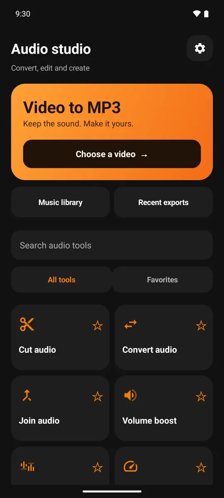
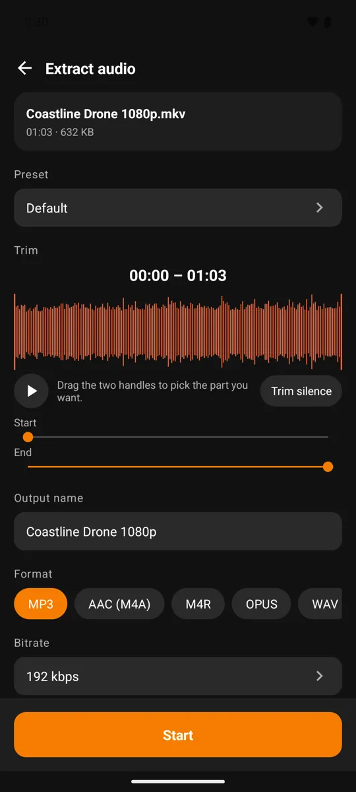
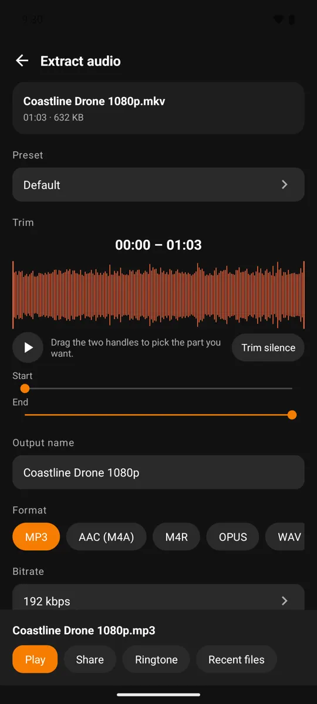

How to convert video to MP3 on Android without uploading it
A lecture you want to hear on the bus, a song from a concert clip, a voice memo that got recorded as video: all you need is the sound. This guide shows how to pull the audio out of a video on an Android phone with Video To Audio & Mp3 Cutter, and which settings matter along the way.
Short answer
Open Video To Audio & Mp3 Cutter, tap Choose a video, drag the two trim handles if you only want part of it, pick MP3 and a bitrate (192 kbps is a good default), then tap Start. The file is converted on the phone and saved to your Music library, where you can play it, share it or set it as a ringtone. The video is not uploaded to a server for conversion.
1. Convert a video to MP3 in 6 steps
You need an Android phone running Android 8.0 or newer and a video saved on it. MP4 and MKV files work, as do most other formats your phone can already play.

- Open the app and tap Choose a video. The orange card at the top of the Audio studio goes straight to the video picker.
- Pick the video. Allow access to your media the first time. You can browse by all files, videos or folders.
- Trim if needed. Drag the two handles on the waveform to keep only the part you want, and press play to hear the selection. Trim silence cuts quiet lead-ins and tails automatically.

- Choose the format and bitrate. MP3 at 192 kbps plays everywhere and keeps files modest. See the sections below if you need something else.
- Name the file and tap Start. Tick Run in background if you want to keep using your phone; progress shows in the notification shade.
- Use the result. The finished screen has Play, Share, Ringtone and Recent files. The audio is also in your phone's Music folder, so other music apps can find it.
Converting many videos? Select several in the picker and they run as one queue. The free plan handles a small batch at a time; bigger batches use credits or Premium.
2. MP3, AAC, OPUS, WAV or M4R?
The format decides where the file will play and how big it gets. If you are unsure, choose MP3.
| Format | Best for | Keep in mind |
|---|---|---|
| MP3 | Music, podcasts, anything you will share | Plays on practically every phone, car stereo and computer |
| AAC (M4A) | Smaller files at the same perceived quality | Very widely supported; slightly less universal than MP3 on old devices |
| OPUS | Speech and voice notes at low bitrates | Needs Android 10 or newer to create |
| WAV | Editing in another app, archiving | Uncompressed, so roughly 10 MB per minute of stereo audio |
| M4R | iPhone ringtones | AAC audio in the container iPhones expect for ringtones |
3. Which bitrate to pick
Bitrate is how many kilobits of data describe each second of sound. Higher means more detail and a bigger file. Rough guide for MP3:
- 320 kbps — music you want to keep (uses a credit per file, or included with Premium).
- 192 kbps — the default; good for music and ringtones.
- 96 kbps mono — lectures, podcasts and voice.
- 64 kbps mono — the smallest file for sending over chat.
A higher bitrate cannot add detail that was not in the video's soundtrack to begin with. For the full reasoning, with file sizes per minute, read Which MP3 bitrate should you use?
4. Cut, merge and tidy up the result

The same Audio studio has the tools you usually reach for next. Search them by name or star the ones you use most:
- Cut audio and Multi-cut to keep one or several parts of a track, and Split file to break a long recording into pieces.
- Join audio to put files end to end, and Audio mixer to layer them.
- Volume boost, Audio speed and Voice changer for level, tempo and pitch.
- Convert audio to change the format of files you already have.
- Karaoke (remove vocals) to reduce centred vocals in a stereo song, with a 10-second preview first.
If you want the song name and artist to show up properly in a music player, edit the title, artist, album and cover art of the saved MP3.
5. What stays on your phone
The conversion itself runs on your device: the app decodes the video's soundtrack and encodes the new file locally, so a long video does not have to be uploaded to a website first. That also means it works when you are offline.
The app does use the internet for other things: ads, anonymous analytics, crash reports and Google Play purchases. The privacy policy lists exactly what is sent.
Only convert what you are allowed to use. Extracting audio is fine for your own recordings and for media whose owner permits it. Do not use it to copy or redistribute someone else's copyrighted work.
6. Frequently asked questions
Is Video To Audio & Mp3 Cutter free?
Yes, basic conversion is free. 320 kbps quality, larger batches and some advanced tools use credits or a Premium subscription.
Can I convert only part of a video?
Yes. Drag the two handles on the waveform to set the start and end, and play the selection before you save.
Where are the converted files saved?
In your phone's Music folder, so they appear in the app's music library and in other music players. Recent exports are also one tap away in the Audio studio.
Does it work without an internet connection?
The conversion does, because it runs on the phone. Ads, purchases and some other features need a connection.
Can I make a ringtone from a video?
Yes. Trim the part you want, convert it, then tap Ringtone on the result screen. Android asks for permission to change system settings the first time.
Why is my MP3 not better than the video's sound at 320 kbps?
The video's soundtrack is already compressed. Re-encoding it at a higher bitrate makes the file larger but cannot restore detail that was removed.
Try Video To Audio & Mp3 Cutter
Free on Google Play for Android 8.0 and newer.
Get it on Google Play